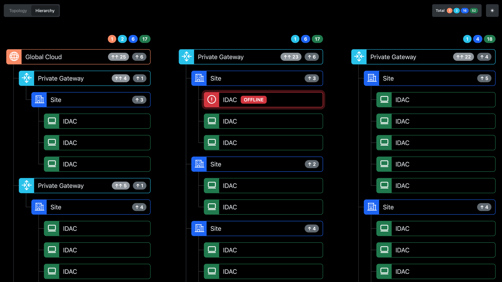
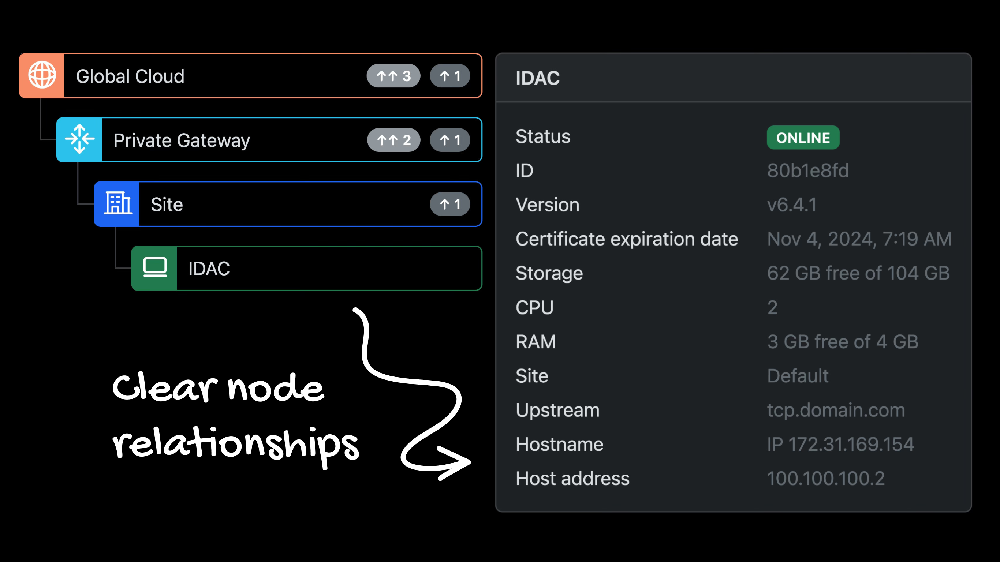
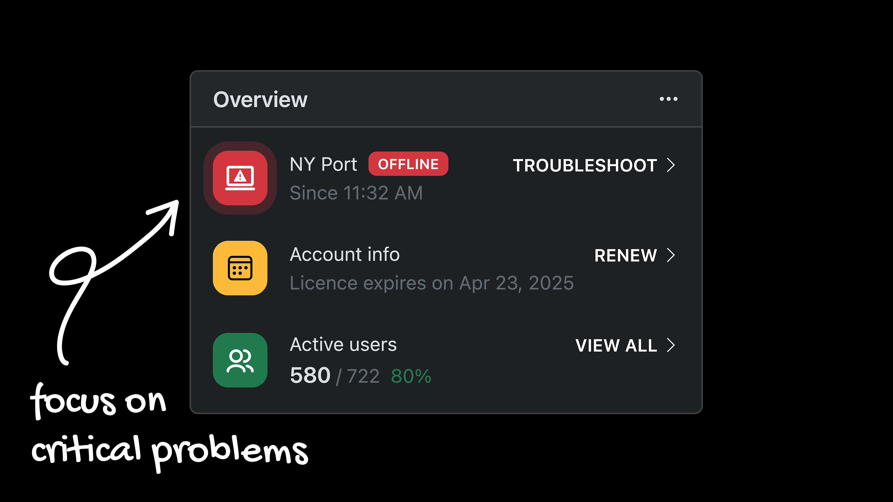
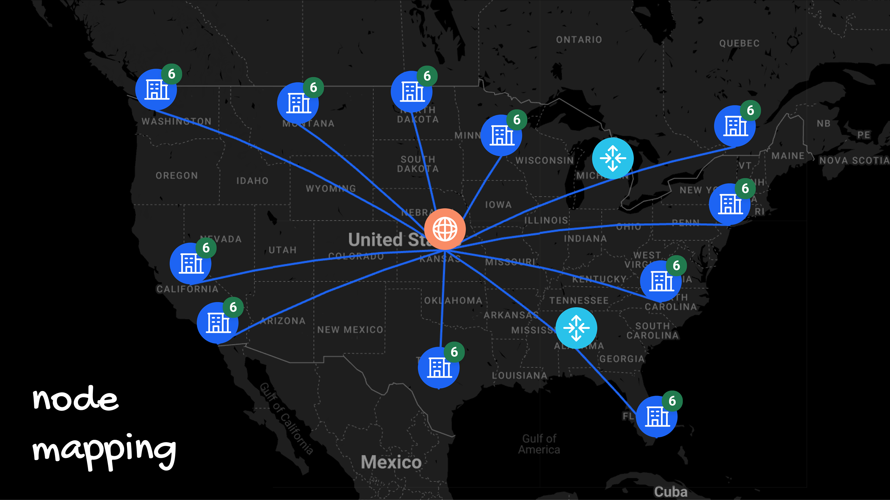
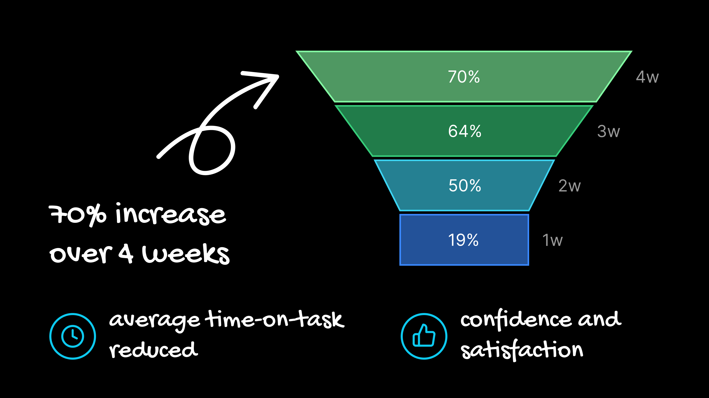
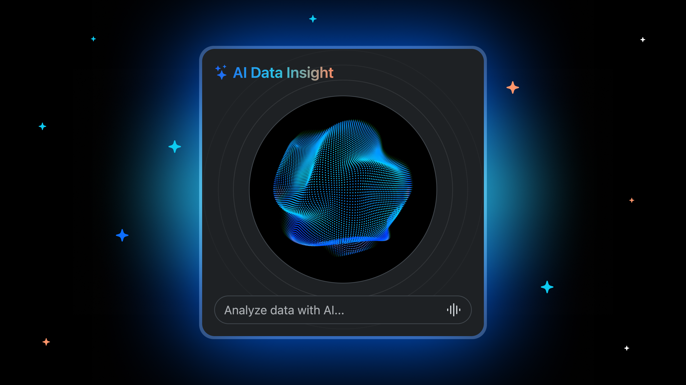

Topology view of the physical and logical arrangement of the nodes.

Hierarchy view of the logical arrangement of the nodes.
This all-in-one tool provides users with full node connections visibility through features like topology mapping, node discovery, and user journey monitoring.
View Live Preview

This case study showcases the tool's core features to address key pain points, enhance user engagement, and support business growth.
Node relationship lists were hard to read and manage, which made it difficult to determine entry point performance, particularly when troubleshooting errors in dysfunctional endpoints.
Its straightforward nature and simple setup make this topology well-suited for node mapping, providing a clear picture of the physical or logical arrangement of nodes and connections.
Beyond improving readability for current customers, a polished and professional experience also made a strong first impression on prospective clients and decision-makers during POCs.
Based on customer feedback highlighting recurring pain points and clear business needs, I designed and validated a new topology-based approach.
The primary goal of this research was to assess the usability and clarity of a new topology-based visualization. We aimed to determine if this new approach would:

A node administrator's journey often begins with a problem, but it's quickly hindered by the lack of a clear, visual map. They're forced to wade through disorganized, text-heavy lists of nodes and connections, making it difficult to trace data flow or pinpoint bottlenecks. This critical pain point — the inability to visualize node relationships — leads to time-consuming, manual investigations, increasing downtime and user frustration.

I moved straight to designing a solution without further research, as it was unnecessary at this stage. To validate the solution, we analyzed user behavior and performance metrics. Data showed a significant reduction in time-on-task for troubleshooting activities — an average decrease of 45% when using the topology map compared to the old list-based format.

We conducted a series of usability tests with both current customers and potential clients. Participants were given specific tasks related to node monitoring and troubleshooting using a prototype of the new topology map. We observed user behavior, recorded task completion times, and gathered qualitative feedback through structured interviews. Furthermore, post-task surveys revealed a 70% increase in user-reported confidence and satisfaction in their ability to understand complex node relationships.

Based on customer feedback, I designed and validated a new topology approach with these outcomes:
Higher user satisfaction was reported, leading us to implement new features aimed at boosting productivity.
Future research and development will focus on integrating AI Assist. This includes predictive network failure alerts and an AI-driven troubleshooting assistant that suggests remediation steps. The goal is to evolve the tool from a reactive visualization platform to a proactive, intelligent network management partner, dramatically reducing the manual effort required for maintenance and error resolution.
